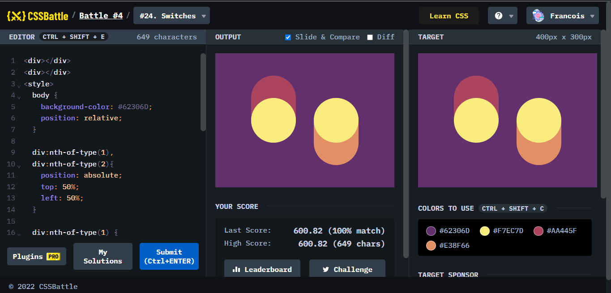
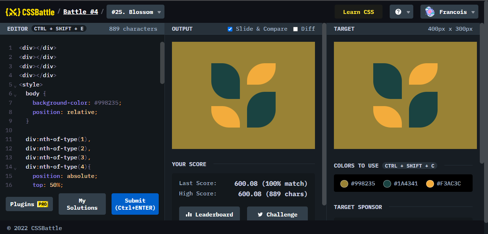
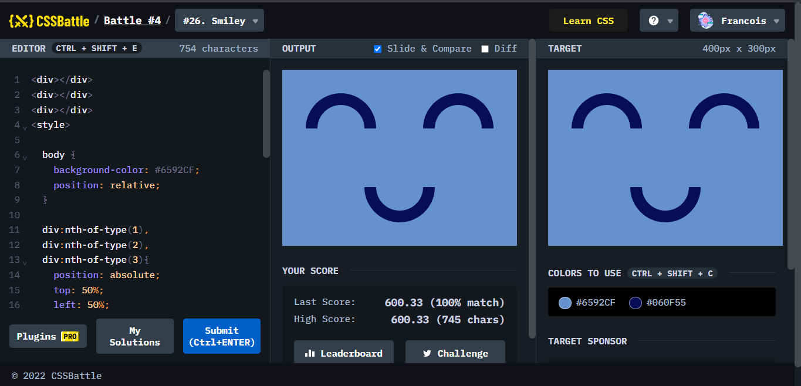
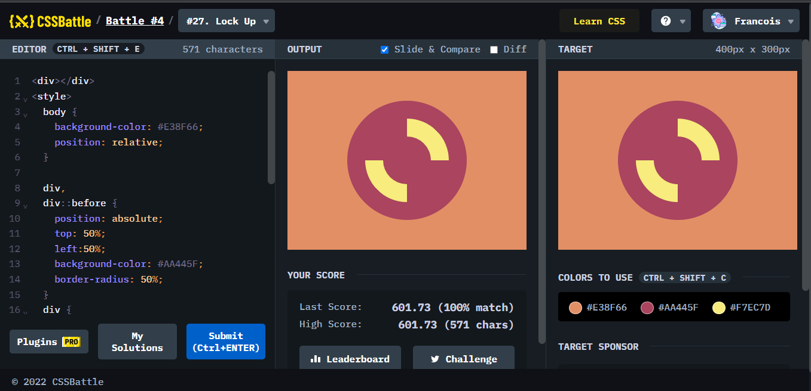
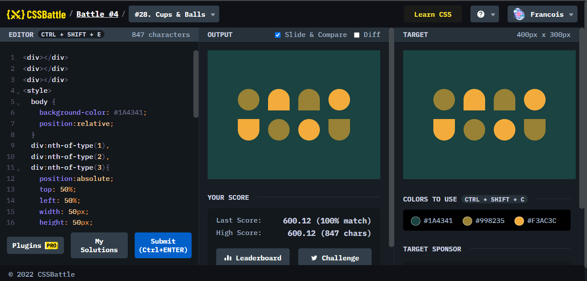

Battle.4では、8問が出題されていて、はじめてのスポンサーがついたなかで、行われたステージのようです。難易度はどのようになっているのかみてみましょう。
ポイント
#19. Cubeと同じでrotateさせないといけないものは大きさが分からくなるところで、調節が難しくなるところから本当に時間がかかった。
ポイント
難しいかと思ったが、意外と細い楕円の土台とその楕円に合わせて円を作ったところ、あっさりできた。もしかしたら、Webページのアイコンとして気軽に使え、アニメーションをつけてローディング画面の紹介で用いたら可能性が広がる可能性がある。
ポイント
地道に別の大きさの正方形をbox-shadowで増やして、位置を調節すれば簡単にできる。

ポイント
円と楕円をそれぞれ作ってbox-shadowで増やして、適切な位置に配置させればできる。特に奥行きの位置関係がおかしくなるため、z-indexのマイナス値を入れることで調節している。

ポイント
向きが違うために、#24. Switchesのようにはできませんが、地道に一つずつ作っていけば問題なく再現することができます。

ポイント
半円を作り、背景色の円を入れることによって作っていたものですが、その模範解答の一例としてborderで枠線を作って再現するという方法があったため、その方法でしてみました。こちらの方が分かりやすくて効率が良いかもしれません。ただし、box-shadowを使ったときに上手くいかなかったのはなぜか解明中です。もし分かった方はお知らせを願います。

ポイント
円を真ん中寄せにした後にした後に、borderで中を開けた円を作る。そのあとは部分的に消すために、くわしくborderの部分をtransparentにするなり、border-場所-colorで指定してもOK。その後rotateで回転させる。

ポイント
box-shadowで目的のものを増やすとできる。